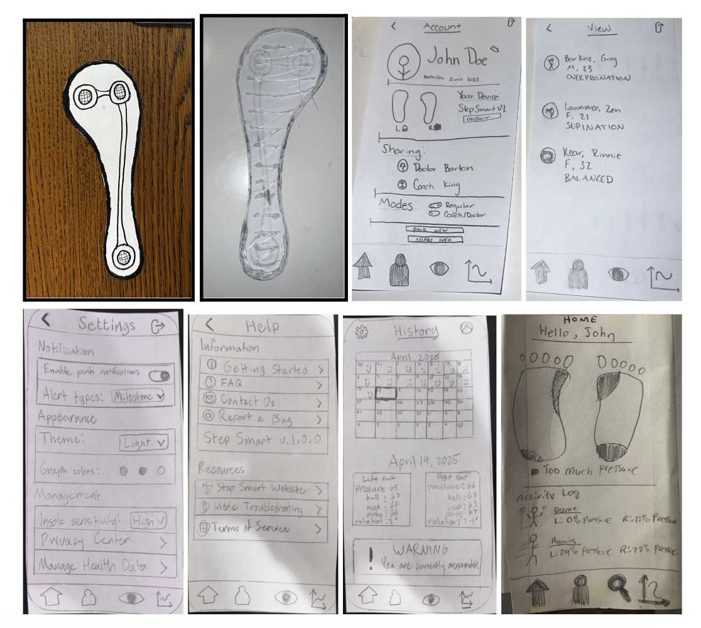
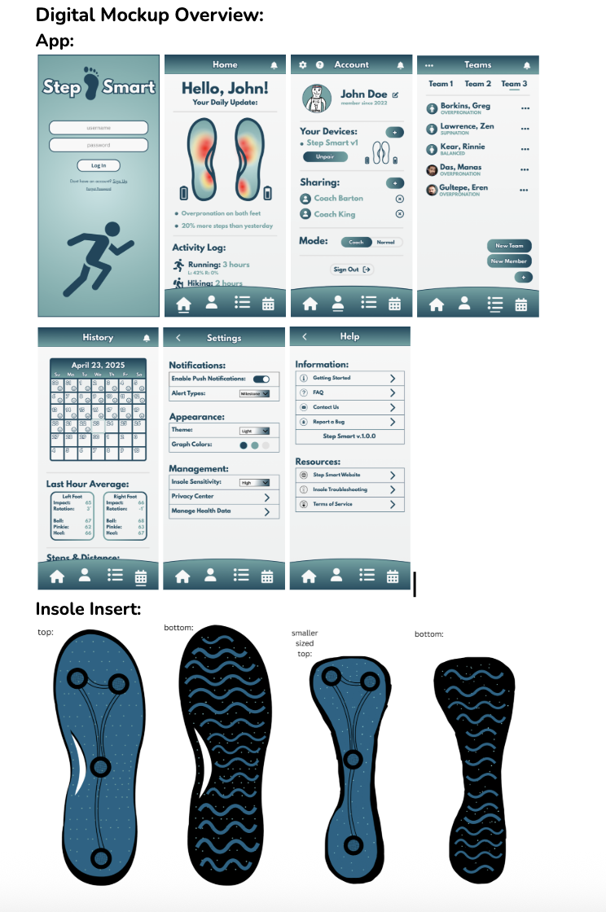

Injury Preventive Insoles
Many athletes suffer injuries due to improper foot posture, leading to inflammation and pain. Step Smart addresses this by using thin insole inserts with pressure sensors and a companion app that tracks foot placement in real time, helping users prevent injuries proactively.
Our prototype includes thin, flexible insoles with pressure sensors and an app featuring real-time pressure maps, activity logs, history tracking, and coach access. Early feedback suggested adding grip to the insole and improving app navigation, which were incorporated into later versions.

Three rounds of usability testing were conducted with athletes and tech-savvy users. Key improvements included better insert grip, clearer app navigation, added sensor on the arch, and user interface updates based on heuristic evaluations and participant feedback.
The app now features improved icons, navigation, real-time alerts, and a calendar-based history tracker. Coaches can switch between teams and view data efficiently. A fourth sensor was added to the insole for better pressure tracking.

Download or view our Part 2 materials below:
Download or view our Part 3 materials below:
This project taught us that successful product design requires multiple rounds of testing, collaboration, and willingness to revise. We evolved from a general concept to a refined prototype by listening to user feedback and integrating it into every iteration.